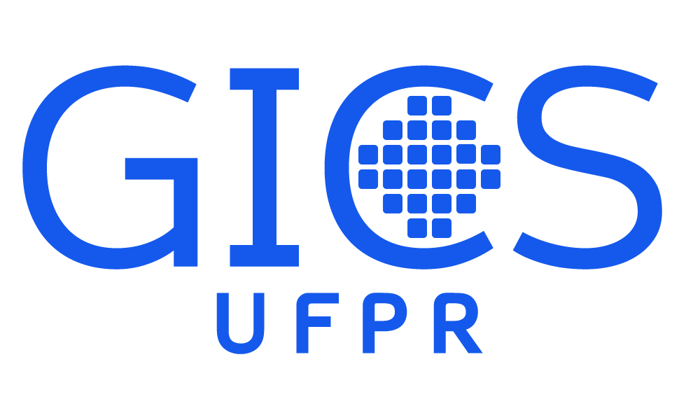
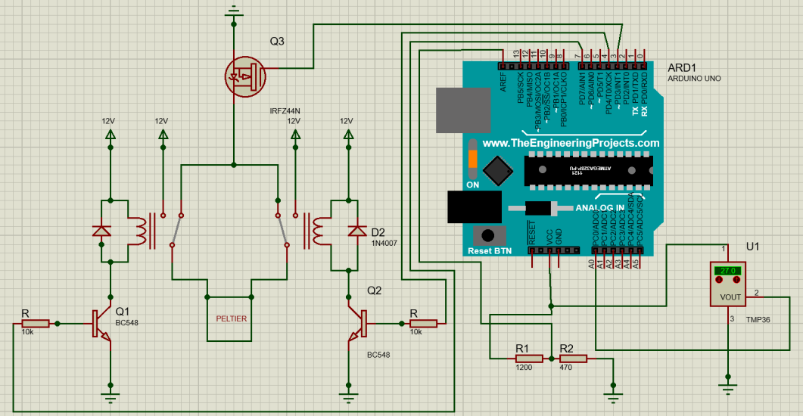
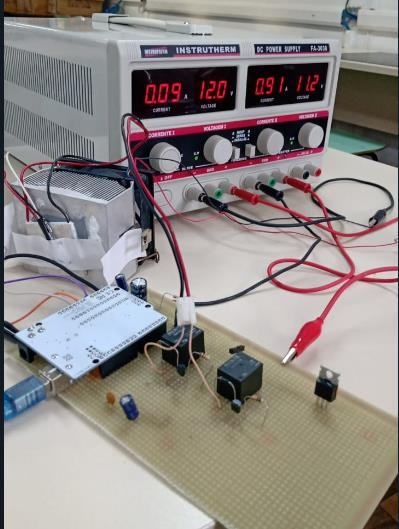

About Me
My name is Ana Paula Princival Machado. I am Brazilian and I am currently pursuing a PhD at CEA-Leti. My thesis, entitled “3D Hybrid Synapses for Frugal and Adaptive Embedded AI” , is affiliated with Université Grenoble Alpes and the EEATS doctoral school (Électronique, Électrotechnique, Automatique et Traitement du Signal).
I hold a Bachelor’s degree in Electrical Engineering from the Federal University of Paraná, with a focus on Electrotechnics, Electronics and Telecommunications. Between 2023 and 2025, I took part in the BRAFITEC–CAPES exchange program, through which I completed the final years of my studies at ENSICAEN (École Nationale Supérieure d’Ingénieurs de Caen). There, I obtained a French engineering degree equivalent to a Master’s degree, specializing in Physics and Embedded Systems.
In 2024, I completed a four-month internship at GANIL (Grand Accélérateur National d’Ions Lourds), where I developed a C++ system for endianness conversion of nuclear experiment acquisition data. I then carried out a six-month final-year internship at NXP Semiconductors in Toulouse, where I developed an automated platform for behavioral model generation using Python to streamline workflows and improve modeling efficiency.
Index
Publications
Scientific papers I have authored or co-authored during my academic journey.
- Machado, A. P. P.; Nypwipwy, V. B.; França, C.; Lima, E. G. “Selective Algorithm for Expanded Group Method of Data Handling Applied to Power Amplifier Modeling”. Journal of Integrated Circuits and Systems , vol. 17, no. 2, 2022. PDF
- Machado, A. P. P.; Lima, E. G. “Modelo Seletivo Aprimorado para Modelagem de Amplificadores de Potência usando GMDH”. Seminários de Microeletrônica do Paraná (SEMiCRO) , Curitiba, Brazil, 2021. PDF
- Machado, A. P. P.; Lima, E. G. “Algoritmo Seletivo com Diferentes Métodos de Extração para Modelagem de Amplificador de Potência Baseada em GMDH”. Seminários de Microeletrônica do Paraná (SEMiCRO) , Curitiba, Brazil, 2022. PDF
- Machado, A. P. P.; Lima, E. G. “Selective Algorithm for Group Method of Data Handling Applied to Power Amplifier Modeling”. XXI Microelectronics Students Forum (SForum) , Campinas, Brazil, 2021. PDF
- Machado, A. P. P.; Lima, E. G. “Real-valued Neural Network Based on Group Method of Data Handling Applied to Power Amplifier Modeling”. XXII Microelectronics Students Forum (SForum) , 2022. PDF
- Machado, A. P. P.; Lima, E. G. “Selective Method with Adapted Activation Function and Applied in Non-linear Optimization for Modeling of Power Amplifiers”. Simpósio Sul de Microeletrônica (SIM) , 2023. PDF
Electrical Engineering Degree
I began my Electrical Engineering studies in 2020 at the Federal University of Paraná (UFPR) and completed my degree in September 2025, with a focus on Electrotechnics, Electronics and Telecommunications. At graduation, I received the Silver Medal for achieving the second-highest academic performance in my cohort.
Throughout the program, I was exposed to a broad range of subjects across multiple domains, including electrotechnics, electromagnetism, analog and digital electronics, telecommunications and control systems.
Teaching Assistantship in Electrical Circuits
In the second semester of 2021, I worked as a teaching assistant for the course Electrical Circuits I, under the supervision of Professor Eduardo Lima. My responsibilities included solving exercises with students, explaining foundational concepts and assisting with their questions. The tutoring sessions were held four times a week during lunchtime, and I was responsible for teaching two of them.
Students were encouraged to attend the sessions through a bonus-point system based on participation. This experience was my first contact with teaching and proved to be deeply enriching, shaping the way I communicate technical ideas and support other learners.
- First presentation Presentation
- Exercises assigned during the tutoring sessions Exercises
- Summary of mesh analysis Mesh Analysis
- Summary of nodal analysis Nodal Analysis
- Summary of the tutoring experience, published at EAF 2022 EAF
EMJEL
From August 2020 to April 2021, I took part in the Electrical Engineering Junior Enterprise. A Junior Enterprise is a student-run organization that provides consulting services and real-world engineering solutions, allowing students to apply their academic knowledge in professional-level projects.
At EMJEL, I worked in the commercial division, preparing proposals and defining project scopes. I also participated in the execution of a project involving the design of a brown-spider venom extractor based on controlled electrical stimulation, developed and sold to a clinical analysis laboratory in Paraná.
GICS
For three years, I carried out a Scientific Initiation program at UFPR in GICS, the Group of Integrated Circuits and Systems. The group focuses on radio-frequency, analog, mixed-signal and digital integrated circuits, microelectronics applied to systems and computational tools for microelectronics.
My scientific initiation projects introduced me to academic research and were where the idea of pursuing a PhD first emerged. My advisor was Prof. Eduardo Gonçalves de Lima, and our research focused on the linearization of power amplifier output signals using GMDH-based neural networks. During this period, I published five conference papers and one journal article.

Electronic Instrumentation
In my sixth semester, I took a course in Electronic Instrumentation taught by Prof. Marlio Bonfim. As part of the final project, we were required to design and implement a complete instrumentation and control system for a small-scale setup. The system assigned to me and my project partner, Matheus Santana, was a temperature-control module based on a Peltier element, capable of both heating and cooling.

Our objective was to measure temperature using an analog TMP36 sensor and regulate the thermal behavior of the Peltier device through a closed-loop control strategy. We designed the acquisition circuitry, implemented signal conditioning and built a full H-bridge using relays to reverse current flow through the Peltier plate. This polarity reversal allowed the same device to operate as either a heater or a cooler.
We began by characterizing the temperature sensor to ensure stable, low-noise readings. After validating its linearity and improving measurement precision through an external voltage reference, we integrated the sensor with an Arduino-based control platform. The Peltier module was then tested to determine its optimal operating voltage for heating and cooling.

Once the hardware was validated, we developed the complete control system. Temperature readings were filtered using oversampling and exponential moving-average techniques to reduce noise. We then implemented a PID controller, tuning separate parameter sets for the heating and cooling regions. After system identification and MATLAB-assisted modeling, we refined the controller gains through iterative testing to minimize overshoot and steady-state error.
The final system maintained the target temperature within the expected accuracy range in both heating and cooling modes. The project allowed me to work through every stage of an embedded instrumentation system: sensor characterization, analog and digital signal conditioning, power-electronics design, system modeling and control implementation.
- Full project report Peltier System
Analog Electronics
In my fifth semester, I took the course Analog Electronics Laboratory II, taught by Prof. Bernardo Leite. The goal of the course was to design a 4-bit flash analog-to-digital converter, implemented entirely in the Synopsys circuit simulation environment. Each team received a unique set of transistor dimensions, and the project was evaluated competitively: the pair achieving the highest ENOB (Effective Number of Bits) would receive the maximum grade.
- First Report — Sampling and Hold Circuit ADC 1
In our first report, we analyzed MOSFET switches (NMOS, PMOS and CMOS) through DC and transient simulations in Synopsys, identifying their operating regions and evaluating their performance as voltage-controlled switches. After characterizing each device individually, we implemented a CMOS transmission gate, which demonstrated more ideal switching behavior across the full input range. Finally, we designed and simulated a sample-and-hold stage using the CMOS switch and a capacitor.
- Second Report — Current Mirrors ADC 2
In our second report, we designed, analyzed and dimensioned NMOS and PMOS current mirrors, including simple and Wilson topologies. We used DC simulations to evaluate output compliance, output resistance and current-copying accuracy. Using graphical sweep methods, we optimized transistor widths to ensure that each mirror delivered the target current with less than 0.5% error.
- Third Report — Voltage References and Differential Pair ADC 3
In our third report, we implemented a voltage-reference network composed of sixteen matched resistors designed to dissipate 120 µW at 1.2 V, generating evenly spaced reference levels for later ADC stages. We then designed and analyzed NMOS and PMOS differential pairs, plotting their transfer characteristics and differential outputs across the full input range.
- Fourth Report — Comparators and Current References ADC 4
In our fourth report, we designed and simulated NMOS and PMOS comparators, beginning with full transistor-level schematics, test benches and DC-sweep analyses. We resized the internal current mirrors to tune the switching point and selected the most accurate comparator topology for each of the fifteen reference voltages.
- Fifth Report — Digital Circuits ADC 5
In our fifth report, we designed and verified a complete set of digital building blocks—NAND2, NAND4, AOI21 and AOI22 gates—by implementing transistor-level schematics and validating their truth tables. Using these gates, we constructed a thermometer-to-binary decoder and then implemented sequential logic, including a D latch, a rising-edge-triggered D flip-flop and a 4-bit register.
- Sixth Report — Complete ADC ADC 6
In our sixth report, we assembled the complete 4-bit flash ADC by integrating the sample-and-hold circuit, current and voltage references, differential pairs, NMOS and PMOS comparators, the thermometer-to-binary decoder and the digital register. We validated the converter using DC levels, triangular inputs and sinusoidal signals. The final design achieved an ENOB of 3.38 bits.
We achieved the highest ENOB in the class and received the maximum grade in the course.
Engineering Degree in Génie Physique et Systèmes Embarqués
In 2023, I was selected for the BRAFITEC program, a Brazilian–French academic exchange program funded by CAPES and coordinated in partnership with French engineering schools. Throughout my academic journey at UFPR, I prepared for this competitive program by strengthening my curriculum through scientific publications, extracurricular activities, strong academic performance and dedicated French studies.
I studied at ENSICAEN (École Nationale Supérieure d’Ingénieurs de Caen), a public engineering school in Caen, Normandy. The program was Génie Physique et Systèmes Embarqués, and my specialization was SATE (Signal, Automatique et Télécom pour les embarqués), with courses in control systems, telecommunications, signal processing and embedded systems.
This was my first experience abroad and allowed me to develop significantly in terms of autonomy, independence and emotional intelligence. I broadened my worldview by being immersed in a different culture while communicating, studying and learning in a language other than my native one.
The exchange opened the door to many opportunities. In April 2024, ENSICAEN organized a trip to Nuremberg for students to visit Embedded World, a major international trade fair dedicated to embedded systems.
Industrial Project – ENSICAEN
During my final semester at ENSICAEN, I took part in the Industrial Project, a course in which students work directly with a company on a real-world engineering project.
I was involved in the NXPCup project, which consisted of developing an autonomous car capable of navigating within the boundaries of a track. I was responsible for acquiring images of the track and training a YOLO-based neural network to detect the track limits.
GANIL
Between April and August 2024, I completed an internship at GANIL (Grand Accélérateur National d’Ions Lourds) in Caen, an international research center dedicated to nuclear physics and the study of atomic nuclei using high-energy ion beams.
During this four-month internship, I developed a method for endianness conversion of nuclear experiment acquisition data, programming in C++ within a Linux environment.
NXP Semiconductors
Between February and August 2025, I completed my final-year internship (PFE – Projet de fin d’études) at NXP Semiconductors in Toulouse.
I was part of the AMS DMS Methodology team, where I developed Python-based automated flows for testbench generation, performed testing and simulations, published technical documentation on the team’s internal platform and improved CDF (Component Description Format) files to enhance the user interface within Cadence Virtuoso.
Technical High School – Oil and Gas
Between 2017 and 2019, I completed a technical high school program in Oil and Gas at the Federal Institute of Paraná in Curitiba, studying almost full-time. Each year, I took around twenty subjects covering both the general curriculum and Oil-and-Gas-specific courses such as electrical systems, mechanics, fluid mechanics, pipelines, advanced chemistry and petroleum refining.
During those years, I also took part in a research project on extracting energy from ocean waves, and my final project focused on wave power and the potential for implementing this technology on offshore oil platforms.
- Poster presented at an internal science fair at IFPR JOCIF
Languages
I speak Portuguese, my native language, as well as English and French. I continue to practice both English and French in my daily academic and professional life.
English
I completed three and a half years of English courses at FISK between 2015 and 2018. At the end of the program, I took the Michigan English Test and obtained a B2 level.
To apply for the BRAFITEC program, I later took the Cambridge Preliminary English Test, where I also obtained a B2 level and achieved full marks in the listening and reading sections.
In January 2024, I took the TOEIC exam at ENSICAEN and obtained a score of 900/990.
French
I completed two years of French courses at Wizard in 2021 and 2022. In October 2022, I took the TCF (Test de connaissance du français) and obtained a B2 level.
Since moving to France in 2023, I have continued to improve my language skills and can now communicate fluently in French.
Other Courses
I have pursued a variety of additional courses and activities aimed at strengthening my technical expertise and broadening my skill set.
- Arduino Certificate
- C++ Certificate
- HTML Certificate
- Introduction to Artificial Intelligence Certificate
- LaTeX Certificate
- MATLAB Certificate
- Python Certificate